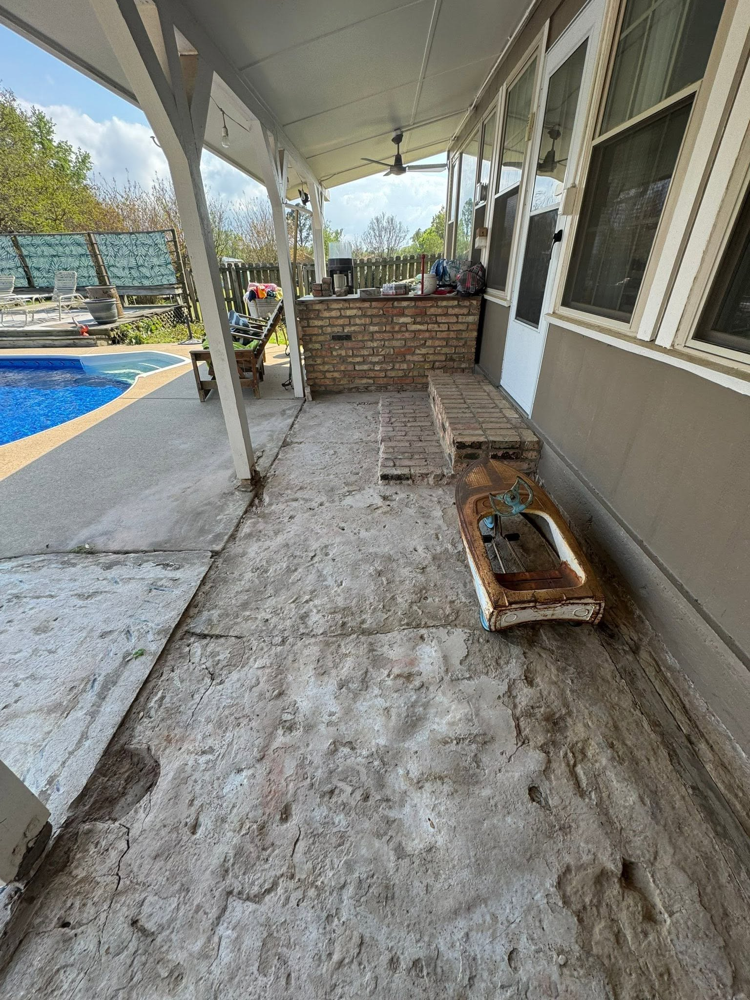
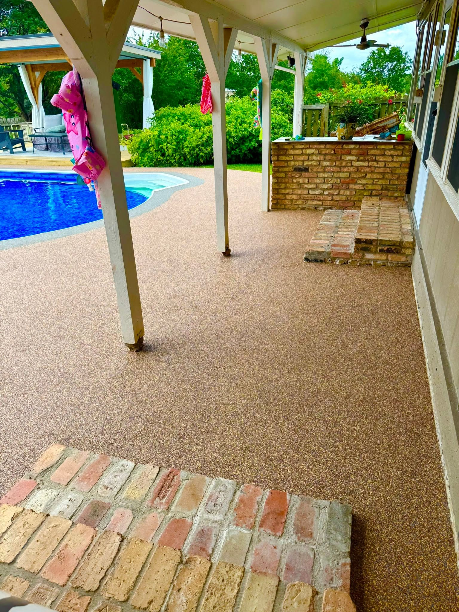
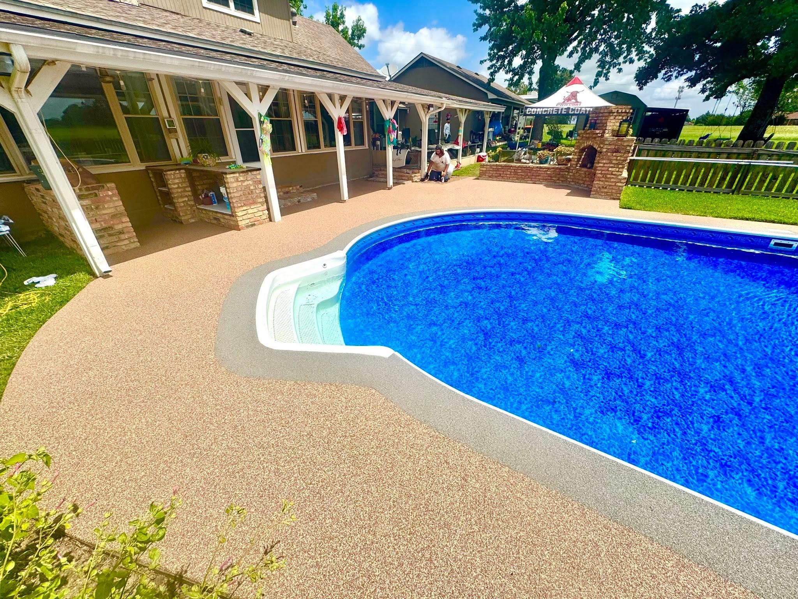
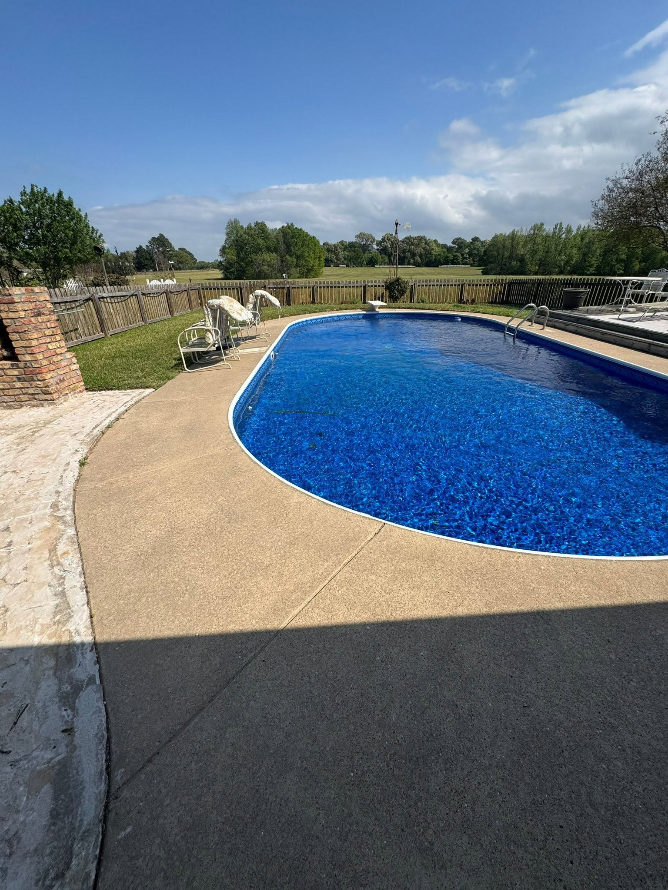
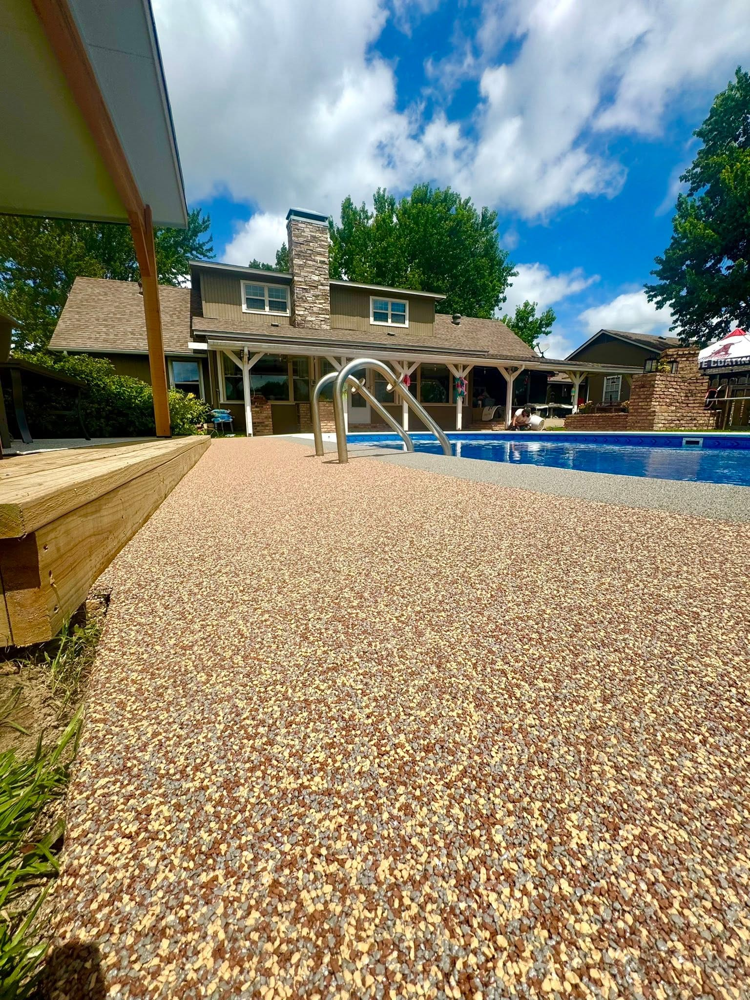
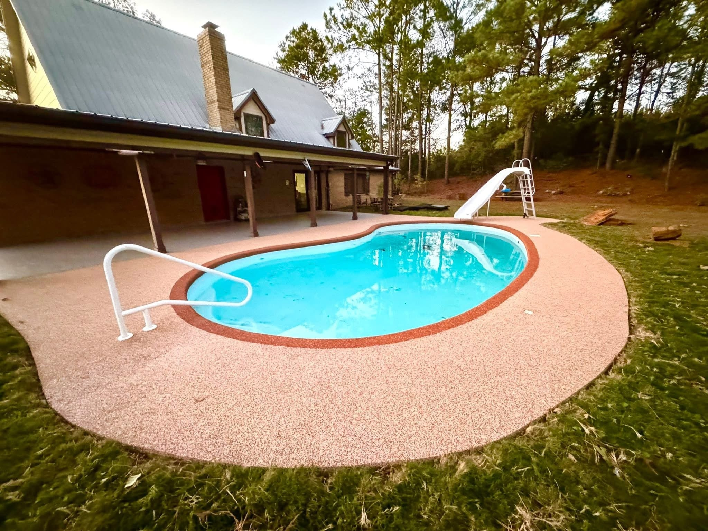
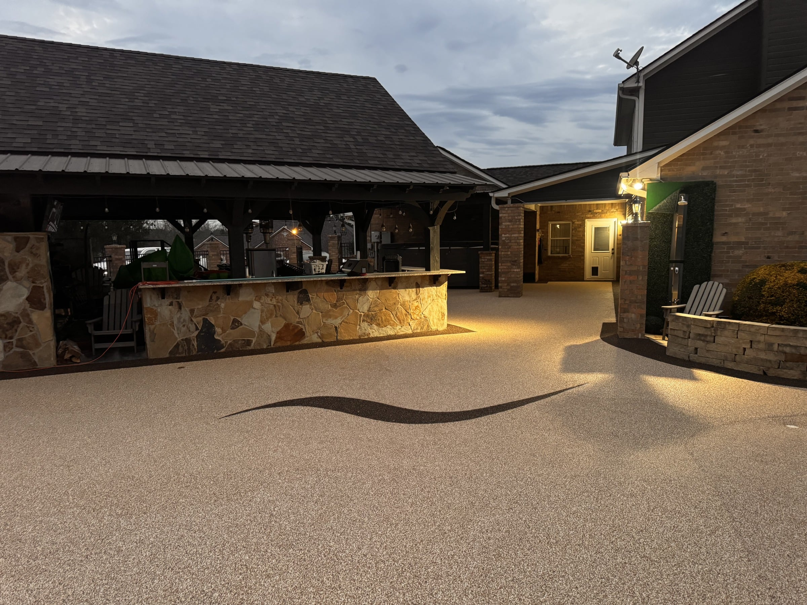
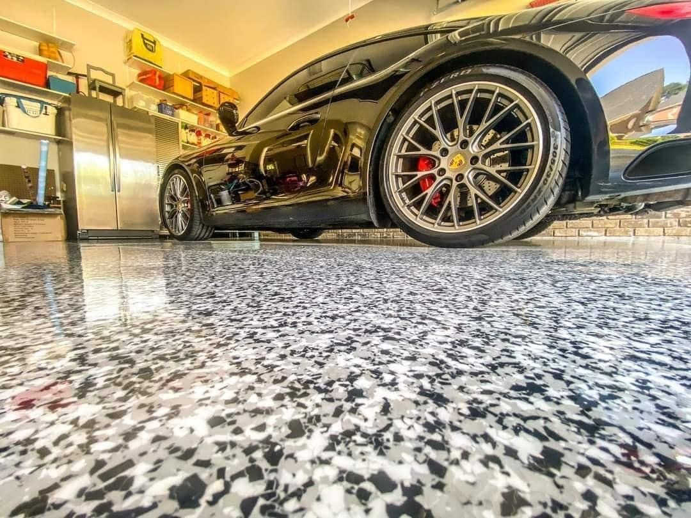
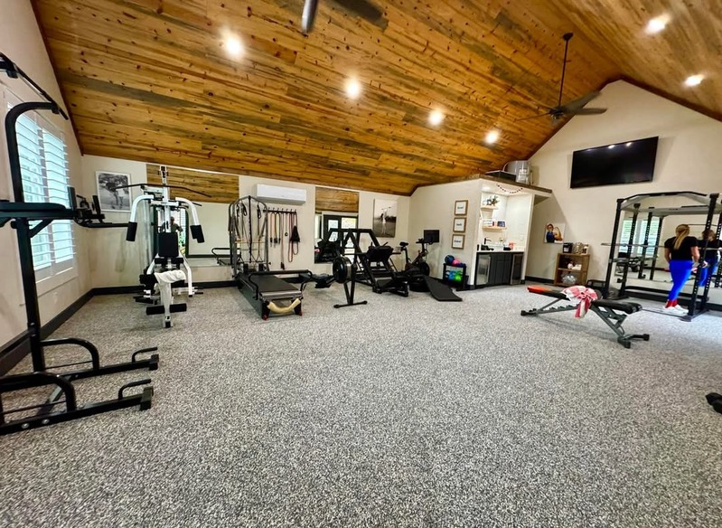

Light resort finishes
Bright blends help pool decks feel fresh, clean, and cooler under bare feet.
Projects
Pool decks, garages, patios, and commercial spaces need to look durable, clean, and intentional from every angle. These project visuals show the finish quality ProCoat customers are buying.
Featured project
This is the kind of project proof that should anchor the gallery: rough, patched concrete around a pool and covered patio transformed into a warm rubber surface that feels finished from the house to the waterline.






Project video
The gallery can grow into a project library where each featured install has photos, a before/after slider, and a short social video when one is available.




Design direction
During the estimate, ProCoat can help narrow color, texture, borders, and project phasing around the home's architecture, pool color, coping, stone, brick, landscaping, and lighting.
Bright blends help pool decks feel fresh, clean, and cooler under bare feet.
Natural tan and stone-inspired tones connect patios, brick, fire features, and landscape areas.
Graphite, ash, and flake finishes work well in garages, shops, showrooms, and commercial spaces.
Ready to choose a finish?